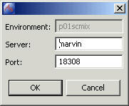

The Profile IDE provides a connection to a Profile RTE for uploading M routines and sending, receiving and test compiling Profile resources. The first step for a Fidelity Profile developer is to create a Fidelity Profile project. Right click navigator view or select File > New > New Profile Project.
Project from the menu bar. In the New Project Wizard select Fidelity Profile and Profile Project and click next.
The second page of the New Project Wizard prompts for a project name and a location for the project contents. You can choose any project name you like. A suggested naming convention for Fidelity Profile Projects is to use the same name as the Profile RTE to which you will connect. Likewise, the location of the projects is entirely up to you. If you are using a Software Configuration Management (SCM) tool, you may want to use the working folders defined by the SCM server. The Create default folders check will create the most commonly used folders in the Profile project.

As the note in the wizard indicates, the connection properties must be set before you can interact with a Profile RTE. Select the project folder in the Navigator view and select File > Properties from the menu bar. You can also get to the properties window by right clicking on the project folder and selecting Properties.
Select M Login in the properties window. This page contains information used to FTP M routines to a predetermined location. Enter the username and password needed to login to the server. (Note: This is your operating system user account, not your Profile user ID.)
Select Profile Login in the properties window. This page contains information used to connect to the Fidelity Profile Runtime Environment.
The Select button opens a look-up window for Fidelity Profile Runtime Environments.
You can add, update and remove Fidelity Profile runtime enviroments by clicking on the respective buttons.

The PSL References tab gives you the opportunity to load the Profile database Schema and PSL Class library from the Profile runtime environment. These libraries are used in the Content Assist and Hover features of the PSL Editor. To download the library files, check the "Generate library from Fidelity Profile" box and click Continue. Note, you must set up a valid Profile Login to download library files.
You can cancel the operation without corrupting the current library file.